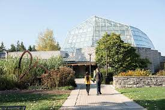

ordered List
- Bruce Peninsula
- Cape Breton Highland
- Elk Island
- Tobermory
The 20-minute Voyage to the Falls boat tour brings guests on the journey of a lifetime. Enjoy stunning views of the Niagara Gorge, American Falls, and Bridal Veil Falls, and come face-to-face with the famous Canadian Horseshoe Falls. Feel the thundering roar, awesome power, and amazing mist (a protective recyclable mist poncho is provided) that come along with these natural wonders or, ride after sunset for a light-mist experience with the illumination of the Fall.
Tourists visiting Canadian Niagara Falls take the Hornblower Niagara Cruise while tourists to USA Niagara Falls take the Maid of the Mist. Visitors wishing to take both boat tours can do so by crossing the border (you should have valid travel documents)
So, the best time to go for the Niagara Falls boat ride is either early in the morning or towards closing time. Book the Falls Fireworks Cruise if you want to see the fireworks display at 10:00 p.m.
The Butterfly Conservatory is located 4 miles/6.4 kilometers north of Niagara Falls on the Niagara Parkway which follows the path of the Niagara River to Niagara Falls Canada. Niagara Parks Butterfly Conservatory features over 2000 exotic butterflies of the world in a tropical rain forest setting. Identify the various species as you make your way along the 180 meter (600 ft.) pathway. There are over 45 different species of butterflies moving through a lush, climate controlled environment allowing visitors to see the new arrivals and get a first hand look into the complex life-cycle of a butterfly. A visit is sure to be an uplifting experience. Located just south of the Floral Clock and next to the Niagara Parks Botanical Gardens.
| Name of Attraction | Things to Do | Places to Eat | Location |
|---|---|---|---|
| CN Tower | Sky Walk | 360 | 290 Bremner Blvd, Toronto, ON M5V 3L9 |
| Rogers Centre | Baseball | Sportsnet Grill | 1 Blue Jays Way, Toronto, ON M5V 1J1 |